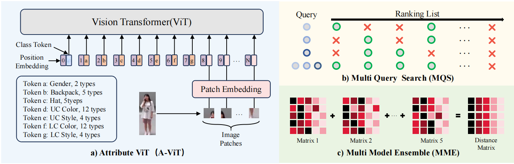
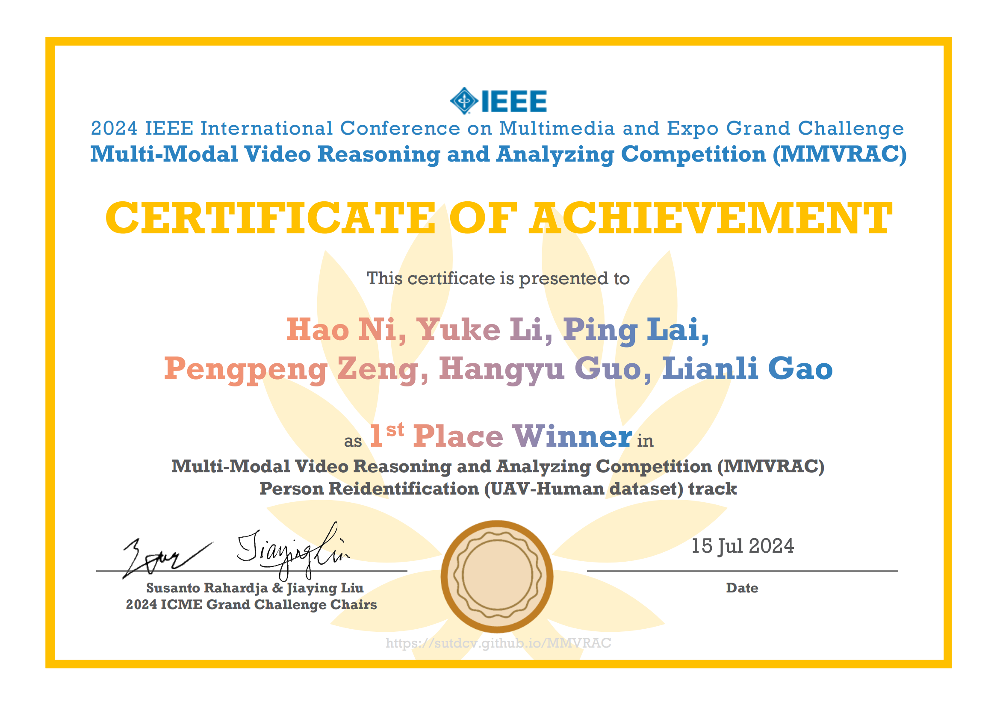
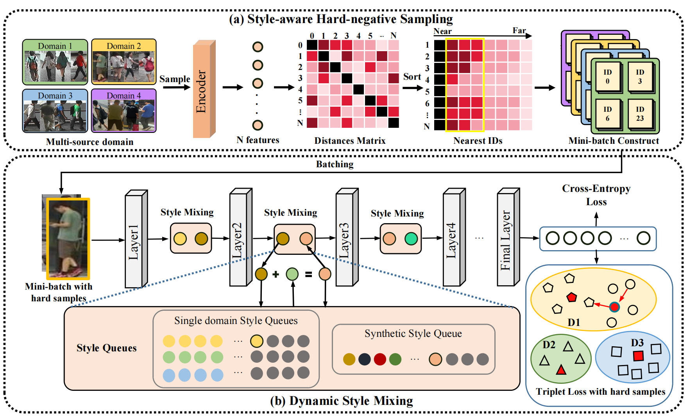
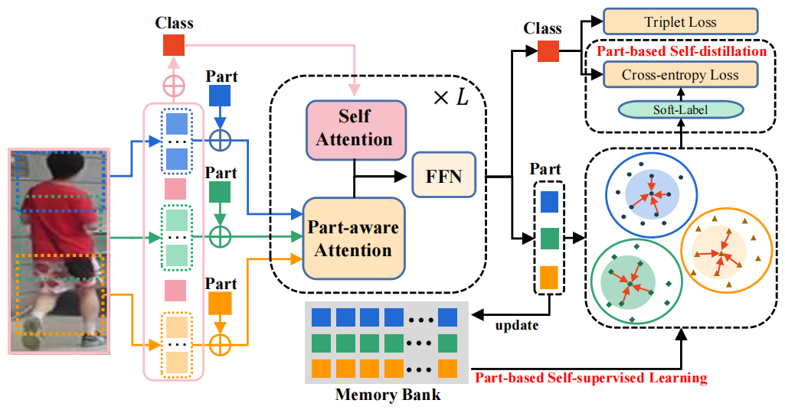

|
Yuke Li I obtained master degree from UESCT in 2024 and bachelor degree from SCU in 2021. I'm currently a research assistant at center for future media. During the master period, I focused on person re-identification, dedicated to improving generalization across domains. Prensently my research interests have shifted to visual generation. Broadly, I am interested in visual generation, diffusion models, representation learning, and incremental learning. |
|
Research
|
|


|
Attribute Vision Transformer for UAV-Human Re-Identification
Hao Ni, Yuke Li, Ping Lai, Pengpeng Zeng, Hangyu Guo, Lianli Gao ICMEW, 2024 code / paper An Attribute Vision Transformer for re-identification, plus multi-query and multi-model ensembling. |
|
|
Pedestrian Attributes Recognition for UAV-Human
Hao Ni, Ping Lai, Yuke Li, Pengpeng Zeng, Haonan Zhang, Jingkuan Song ICMEW, 2024 code / paper Class Imbalance Correction Strategy (CIC) and ID-based Attribute Correction Strategy (IAC) to enhance attribute recognition. |
|

|
Style-controllable generalized person re-identification
Yuke Li, Jingkuan Song, Hao Ni, Heng Tao Shen ACM MM, 2023 code / paper Style-aware Hard-negative Sampling (SHS) and Dynamic Style Mixing (DSM) for better diversity and id-disctrimination. |
|

|
Part-aware transformer for generalizable person re-identification
Hao Ni, Yuke Li, Lianli Gao, Heng Tao Shen, Jingkuan Song, ICCV, 2023 code / paper Proposed a part-aware transformer (PAT) which learns more generic features via cross-ID similarity learning and part-guided self-distillation. |
Miscellanea |
Awards |
Jul 2024: 1st Place Winner in Multi-Modal Video Reasoning and Analyzing Competition (MMVRAC) Person Reidentification track
Jul 2024: 1st Place Winner in Multi-Modal Video Reasoning and Analyzing Competition (MMVRAC) Attribute Recognition track |